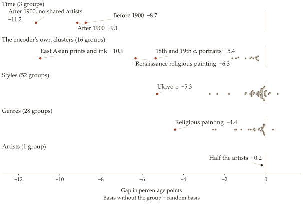
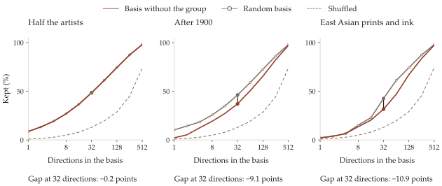
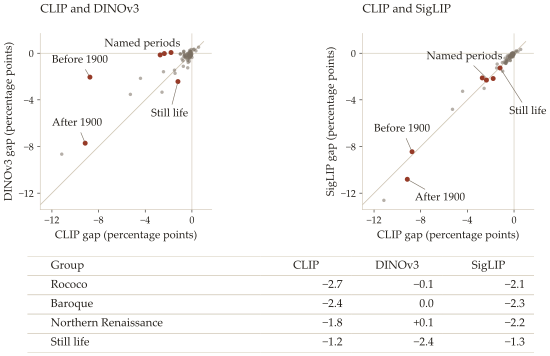
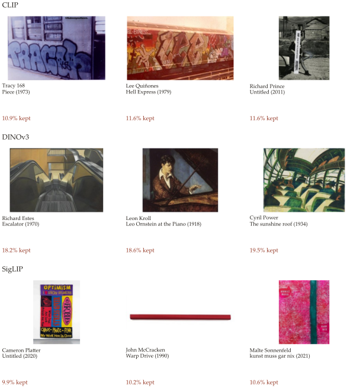

Q2 How well does a basis from some artworks describe other ones?
Q1 asked whether the works around one artwork share directions, and now we ask it of whole groups. Say we only had the artworks made before 1900, as our search will.1 How much of a painting made after 1900 could we describe with the ways the earlier works vary? If a lot, the later work varies in the same ways as the earlier works. If little, it varies along directions the earlier works barely used, or in the same ways around an average off to one side. We can ask the same of any two groups of works, an artist, a style, a genre or a time, and we measure it in 7 steps:
- We take every work in the corpus and its vector from an encoder, scaled to length 1, i.e., each work is a point on a sphere.
- We split the corpus into two groups, for e.g., works before 1900 and works from 1900 on.
- From the first group we take its average, and the k directions along which its works spread the most around that average (its principal components, as in PCA). The group’s average and these k directions are its basis, and the flat space the directions span is the group’s subspace. We always measure from the group’s average along these directions (as in Q1, but around a whole group, not one work’s neighbours). We go from k = 1 to 512, as at 768 (CLIP’s size) a basis keeps all of every work and there is nothing left to compare.
- Then for each work in the second group, we subtract the first group’s average from it and project that difference onto the k directions, i.e., we keep only its position along them (its shadow). The work is now k numbers instead of 768.
- What the basis keeps of the work is the share of its squared distance from the average that lands in the shadow, and the rest is what it misses. We use squared distance because it splits exactly into kept + missed (Pythagoras), which plain distance doesn’t.
- We sum the squared shadows and the squared distances from the average over all the works of the second group, and divide, so a work far from the average counts more than one close to it.
- A basis can keep more of the works it was fitted on simply because it was fitted on them, so we compare it with a random basis of the same size. We fit the random basis as in step 3, on works drawn at random from the whole corpus, so the works are random and the directions are still their principal components. We leave out only the works we test on (so it can still hold other works of the group, e.g., those past the 20-per-artist cap). The gap is how much less the group’s basis keeps than the random basis does. The figures print it with a minus sign.2
![Left: each point pairs the same held-out work under the pre-1900 and random bases. The diagonal is equal share kept. Right: full-test-group shares sum squared shadow lengths and divide by summed squared offsets, separately for each basis. Their difference is the group gap. The interactive pixel analogy uses held-out patches from The Great Wave. Changing the number of retained patch directions changes the reconstruction and signed residual. Its energy shares are pixel-space results. The static comparison shows paired measured per-work CLIP shares and group ratios of sums, not a difference of raw drop lengths.](figures/code_fit.svg)

We ran this in CLIP on 100 groups of works, from styles and genres to time (Figure 2).3
A. In CLIP, time is one of the 2 biggest splits in the corpus. A basis from the works before 1900 keeps 9 points less of the later works than a random basis does, i.e., a fifth less. Going backward, a basis from the later works keeps about 9 points less of the earlier ones. Leave the artists who work on both sides of 1900 out of the basis from before 1900 and the gap grows to 11.4
B. In all 3 encoders, East Asian prints and ink sit apart too. Of the 16 groups the encoder forms on its own in one clustering run, this one has a gap about as large as time’s in CLIP and SigLIP, and twice as large in DINOv3. The next 2, Renaissance religious painting and the portraits of the 18th and 19th centuries, have about half of it.5
We also notice that who made a work matters little. A basis that never saw an artist describes their works about as well as one that saw their other works.6 Most styles and genres don’t matter much either, with Ukiyo-e and religious painting standing out a little.7

The gap also depends on k. With enough directions every basis keeps almost all of every work, whoever it was fitted on, so the gap shrinks to under a point (Figure 3).8

The 2 biggest gaps are different kinds of miss (Figure 4). Measure the later works from their own average instead of the earlier works’ average, and the gap after 1900 stays, even grows. So the later works spread differently from the earlier ones, along directions the earlier works used only a little (Q3). For the East Asian prints the gap almost disappears. So they mostly sit off to one side of the rest of the corpus. Around their own average they vary more like the rest.9
![Two charts compare whole-group CLIP gaps before and after centring, for works after 1900 and for East Asian prints. Whiskers span five draws. Interactive views add changing pixel images and measured works along one retained direction and a residual direction fitted on other artists. A matched held-out control is available. Interactive controls construct a shift of patch means or a rotation of patch variation in The Great Wave. Subtracting the new mean removes the constructed shift exactly but does not undo the changed spread. The separate chart shows measured group-level CLIP gaps.](figures/move_vs_reorder.svg)
The other encoders
Time has a gap in SigLIP and DINOv3 too, about 11 and 8 points against 9 in CLIP, though in DINOv3 the gap barely holds going backward.
Where SigLIP and DINOv3 agree and differ, with figures
In all three encoders the gap grows when measured from the later works’ own average (Figure 5). DINOv3 never saw a caption, so the gap does not need captions to appear.10
The East Asian prints sit apart in all three, with the largest gap of each encoder’s own clusters. In all three they mostly sit off to one side.11
We also notice that in DINOv3 the gap for time goes mostly one way. A basis from the later works describes the earlier ones almost as well as a random basis does (measured from the earlier works’ own average the gap is back to −6.8). For DINOv3 the named periods (Rococo, Baroque and the Northern Renaissance) have no gap.12 The encoders also differ on which later works the basis from before 1900 keeps worst: graffiti and conceptual pieces in CLIP; minimalism, street art and recent work in SigLIP; photorealism and a few early modern works in DINOv3 (Figure 6).13


So the later works vary in ways the earlier ones barely did, and where they went is the next question (Q3).
Footnotes
1900 is a round point the data tolerate, not a single break. In CLIP, with 40-year windows, the works of 40 years describe the next 40 years worst for cutoffs from about 1880 to 1910, the stretch of fastest change, and 1900 falls in it. Going forward, cutoffs of 1890 and 1910 give nearly the same gap as 1900, while 1850 and 1950 give a much smaller one. Going backward, from the later works to the earlier, the gap is about as large at cutoffs 1850 to 1860 as at 1910 to 1940, with a dip near 1900 between them. The direction in which the corpus moves turns most a little earlier, around 1880, as 40-year windows read it.↩︎
Two random bases of the same size differ by 0.01 to about 1 point (one standard deviation, depending on the group). That is the size of a gap luck alone gives. The random basis has also seen more of some groups than others. For the time split about 30% of its works are later works (and over a third are undated), and for the East Asian prints about 1%.↩︎
The 100 groups are half of the artists, three time groups (works before 1900, works after 1900, and works after 1900 with no artist on both sides), 52 styles, 28 genres and 16 clusters. We read a cluster by its most common styles and years. All use CLIP, 32 directions, at most 20 works per artist and 5 random draws. Except for the time groups, each group draws on all named works, dated or not. The random basis always draws on all named works, for the time groups too.↩︎
The basis from before 1900 keeps 9.1 points less of the later works than a random basis does, and the basis from after 1900 keeps 8.7 points less of the earlier ones. With no artist on both sides the gap is 11.2. The gap holds whether each artist brings 5 works or 50, and for bases from 1,000 works to all of them.↩︎
East Asian prints and ink (Ukiyo-e, ink and wash, shin-hanga) have a gap of 10.9 points, Renaissance religious painting 6.3 and portraits 5.4. The other 13 clusters are within 1.7.↩︎
Leaving half of the artists out of the basis gives a gap of 0.2 points. A basis from before 1900 holds fewer artists than its random basis (1,075 against 2,344), but that is not why the gap for time is so large: losing half of the artists gives 0.2 points, not 9. This holds for the 32-direction basis. Up close the artist is there: a third of a work’s 15 nearest works in CLIP are by the same artist (Q1). Style and genre are shared far above chance too, century about twice as often as chance.↩︎
73 of the 80 styles and genres have a gap within 1.5 points. Ukiyo-e has a gap of 5.3 points and religious painting 4.4. The other five, Rococo, abstract, portrait, Baroque and Northern Renaissance, have 1.8 to 2.7.↩︎
With 512 directions the bases keep 97 to 98% of the later works. The gap is largest around 32 directions for time and around 64 for the East Asian prints. After 1900 the basis misses from the very first direction. For the East Asian prints the first few directions do fine, and the basis misses only after that.↩︎
Measuring from a group’s own average tends to close a gap anyway. So the East Asian result goes with that tendency, while the time result goes against it.↩︎
At 32 directions the gap after 1900 is −20% of what a random basis keeps in CLIP, −23% in SigLIP and −14% in DINOv3 (−9.1, −10.8 and −7.7 points). Measured from the later works’ own average it is −12.6, −13.3 and −11.9 points. Across the 84 groups the gaps correlate 0.99 between CLIP and SigLIP and 0.88 to 0.90 with DINOv3. Over the 80 styles and genres alone they correlate 0.73 to 0.74 with DINOv3, so the big gaps carry the correlation.↩︎
For the prints the gap is −10.9 in CLIP, −10.6 in SigLIP and −15.6 in DINOv3. Measured from their own average, the gap closes by 88 to 93% in all three. So most of the gap is where the prints sit.↩︎
Rococo, Baroque and the Northern Renaissance cost 1.8 to 2.7 points in CLIP and SigLIP and about zero in DINOv3. A group costs something when its gap is more than half a point and 3 times the noise. We have not tested whether DINOv3 can tell these periods apart at all.↩︎
DINOv3’s worst include photorealist works (Estes, Register, Danby) and works by Leon Kroll, Cyril Power and Blek le Rat.↩︎